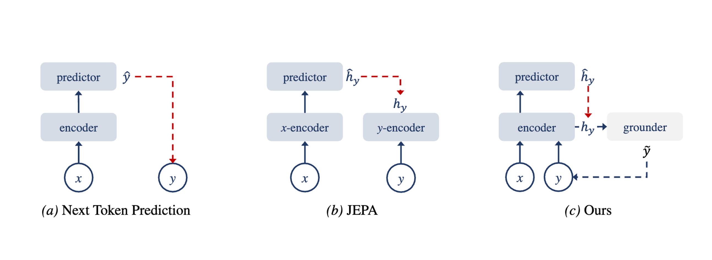
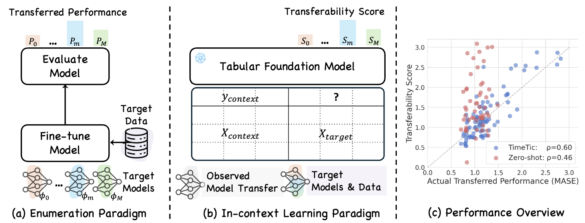
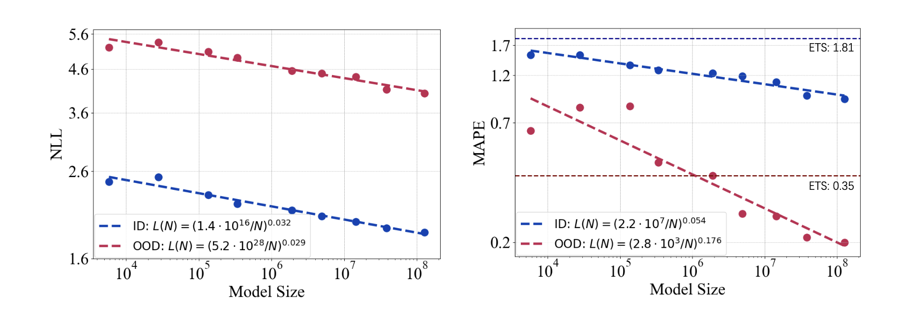

🏷 About Me
I am a PhD student (Since 2025.10) at Department of Mathematics and Computer Science, Eindhoven University of Technology, supervised by Prof. Joaquin Vanschoren. I am also very fortunate to work closely with Dr. Ming Jin at Griffith University.
My long-term research interests include:
- Multimodal intelligence (beyond vision & language)
- Spatiotemporal foundation models
If you would like to discuss any details or ideas about these research topics, please feel free to reach out.
📝 Publications
For more information, see my Google Scholar.

EIDOS: Latent-Space Predictive Learning for Time Series Foundation Models
Xinxing Zhou, Qingren Yao, Yiji Zhao, Chenghao Liu, Flora Salim, Xiaojie Yuan, Yanlong Wen^, Ming Jin^
Preprint, 2026

Estimating Time Series Foundation Model Transferability via In-Context Learning
Qingren Yao, Ming Jin^, Chengqi Zhang, Chao-Han Huck Yang, Jun Qi^, Shirui Pan
Preprint, 2025

Towards Neural Scaling Laws for Time Series Foundation Models
Qingren Yao, Chao-Han Huck Yang, Renhe Jiang, Yuxuan Liang^, Ming Jin^, Shirui Pan
International Conference on Learning Representations (ICLR), 2025. CORE A*.
💻 Internships
- 2025.04 – 2025.08, Shanghai Artificial Intelligence Laboratory, Shanghai, China. Intern.
- Supervised by Dr. Chao Zhang and Dr. Wen Wu.
- 2024.12 – 2025.04, Hong Kong Baptist University, Hong Kong, China. Research Assistant.
- Supervised by Dr. Jun Qi.
- 2024.04 – 2024.12, Hong Kong University of Science and Technology (Guangzhou), Guangzhou, China. Research Assistant.
- Supervised by Dr. Yuxuan Liang, Dr. Ming Jin and Prof. Shirui Pan.
📖 Educations
- 2021.09 – 2024.04, Tianjin University, Tianjin, China. M.S. in Electronics and Information Engineering.
- 2017.09 – 2021.06, Wuhan University of Technology, Wuhan, China. B.E. in Communication Engineering.